Stage de deuxième année
J'ai effectué mon stage de deuxième année au sein du groupe Innov8 à Decine.
Quelque informations...
- Date: Du 14 Fevrier au 8 Avril 2022
- Poste: Technicien
- Tache donnée: Mise en place d'un serveur WSUS
Au cours de mon stage je suis principalement intervenu sur la mise en place d'un serveur WSUS (Windows Server Update Service). Je suis également intervenu sur quelque tache commune à mon maitre de stage et au seconds étudiant présent lors de mon stage (en alternance).
Présentation de l'entreprise
Le groupe INNOV8 a été fondé en 2011 par Stéphane Bohbot. Celui-ci est spécialiste de la
distribution des produits et services connectés (smartphones, accessoires, objets connectés
& audio) et de solutions RetailTech, avec un chiffre d’affaires de plus de 300M€ et 240
collaborateurs, est présent en France au travers de sa filiale INNOV8 France (regroupant ex.
ascendeo et ex. Extenso), en Espagne et Portugal au travers de sa filiale de distribution
INNOV8 Iberia (ex. ascendeo Iberia) ainsi qu’à Hong Kong et Shenzhen au travers de sa
filiale de Sourcing et R&D, INNOVHK.
Le projet
Lors de mon stage j'aurais à mener à terme deux projets distincts mais faisant partie d’un
même plan d’action sur le réseau informatique de l’entreprise.
Le premier est la mise en place d’un serveur WSUS (Windows Server Update Services). Il
s’agit d’un serveur Windows permettant distribuer de manière contrôlé des mises à jour à
différents clients. Ce serveur aura pour but de permettre de tester les mises à jour
proposées par Microsoft au préalable sur une population de test avant de distribuer celle-ci
à l’ensemble de l’entreprise. Il est également possible de faire des retours en arrière en
désinstallant des mises à jour si souhaité. Ainsi il s’agit d’un outil puissant de gestion
de patrimoine informatique permettant de prévenir tout problème lié à des mises à jour
défectueuses tout en gardant un suivi des mises à jour sur l’ensemble des clients monitorés.
Le second projet est la mise en place de la solution LAPS (Local Administrator Password
Solution). Il s’agit d’une solution gratuite proposée par Microsoft afin de sécuriser les
comptes administrateurs locaux des clients. Elle s’applique dans un domaine et procède en
modifiant le mot de passe de chaque administrateur local afin que celui-ci soit robuste et
unique. De plus, chacun des mots de passe est changé à une période donnée et est stocké de
manière sécurisé dans le contrôleur de domaine. Ainsi cette solution permet de limiter les
attaques de type “Pass The Hash” généralement effectuées par les rançongiciels afin de se
propager sur le réseau. Il s’agit d’un élément critique d’une infrastructure car les
administrateurs locaux d’une infrastructure possèdent généralement les mêmes mots de passe
car issus d’un déploiement massif.